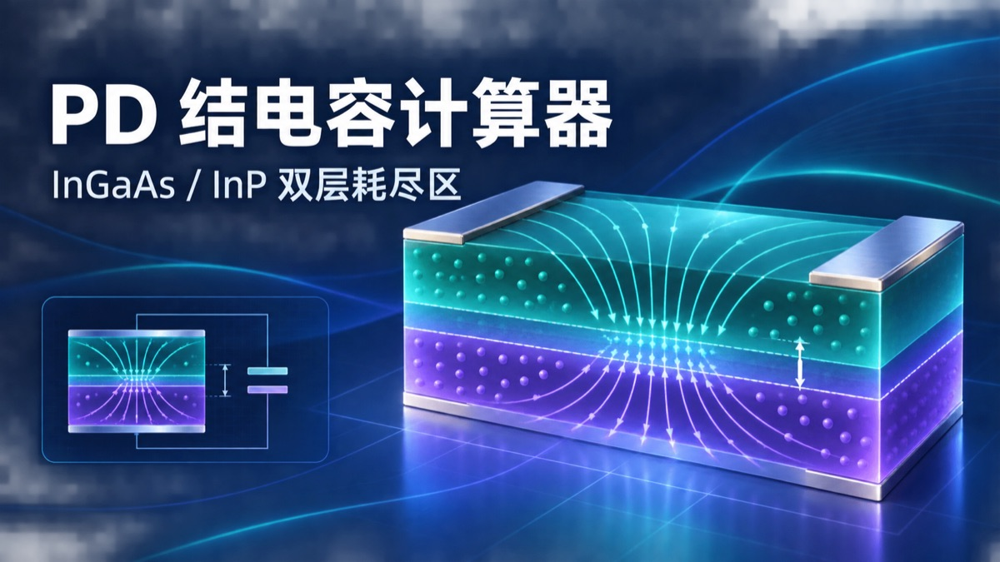

TOOL SELECT / 工具选择
选择你的
工程工具
把重复计算从表格和草稿纸里解放出来。轻量、直接、无需安装。
00
LU LAB TOOLBOX持续扩充中 · Continuous build
AVAILABLE MODULES
可用模块
点击卡片进入工具

01 READYPD 结电容计算器
输入 InGaAs、InP 耗尽区厚度与器件直径，实时估算双层耗尽区总电容。
启动工具↗
顶部金属反射率
自由排列 Ti、Pt、Au 金属层并调整厚度，计算返回 PD、金属吸收与透射的光强比例。
启动工具↗
PD 射频响应分析器
联合分析等效电路、Touchstone 幅相与 Smith 图，并合成 RC、渡越时间和实测总响应。
启动工具↗
PD 外延响应工作台
自由编辑外延与金属层，实时生成结构剖面并计算目标吸收、响应度、腔内场与双参数厚度扫描。
启动工具↗
InGaAsP Q 参数计算器
输入截止波长 Q，实时获得 300 K 带隙 BG、electron affinity 与晶格匹配的 Ga / As 组分。
启动工具↗